set_global_fn(100)Stick Barrette
A hair clip made up of two parts
| Main (top/outer) part | Stick (bottom/inner) part |
|---|---|
.jpg) |
.jpg) |
Lets design this part. As opposed to other hair clips, there is no need for complex spring mechanism, and the whole thing can be 3d printed without any supports.
Length of the outer part.
outer_length = 120Now we need the radius of circumference. This is the part of the human skull we are interested in. The radius of circumference varies from person to person, but is about 9 cm according to Llama 3.3 70B, and that sounds about right, so I am gonna trust it for now.
outer_radius = 90Note that we could make an arc by subtracting a section from a circle, but this won’t work for angles larger than 180 degrees. So let’s just use a polygon.
arc_2d
arc_2d (r, start_angle, end_angle, thickness, step=0.5)
r = 50
thickness = 5
start_angle = 0
end_angle = 90
arc_2d(r, start_angle, end_angle, thickness)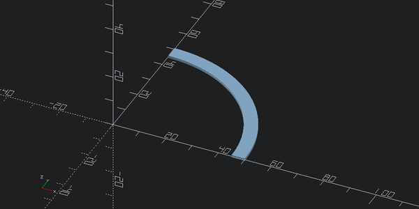
arc_2d(r, -45, 45, thickness)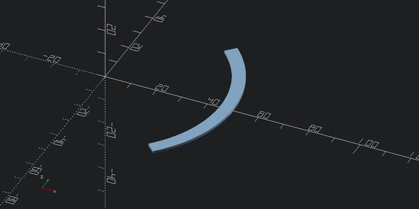
arc_2d(r, -45, 45, thickness)@delegates(arc_2d)
def arc_3d(r, start_angle, end_angle, thickness, height, **kwargs):
return (arc_2d(r, start_angle, end_angle, thickness, **kwargs)).linear_extrude(height)arc_3d(r, -45, 45, thickness, 50)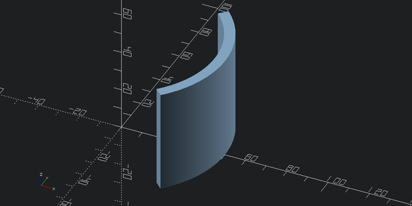
outer_height = 40outer_angle = outer_length / outer_radius
outer_angle = np.rad2deg(outer_angle)
outer_anglenp.float64(76.39437268410975)outer_thickness = 5outer_part = arc_3d(outer_radius, -outer_angle/2, outer_angle/2, outer_thickness, outer_height)
outer_part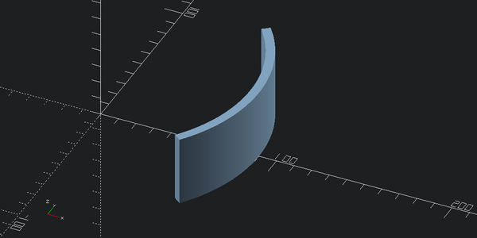
Cool, now lets add holes where inner part would go. To make it compatible with 3d printing, lets make holes using a 45 degree rotated cube so that we only have 45 degree inclines maximum.
r = outer_radius*1.2
hole_size = 10
hole_cutter = (cube([r,hole_size,hole_size])
.translate([0,-hole_size/2,-hole_size/2])
.rotate([45,0,0])
.translate([0,0,outer_height/2]))
outer_part + hole_cutter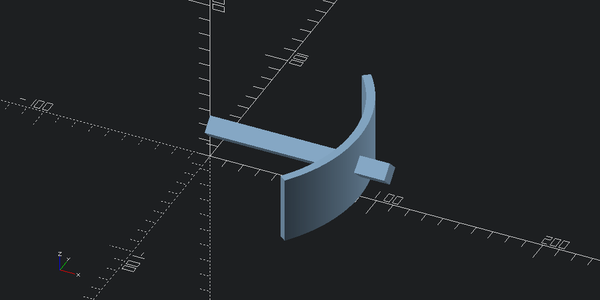
outer_part - hole_cutter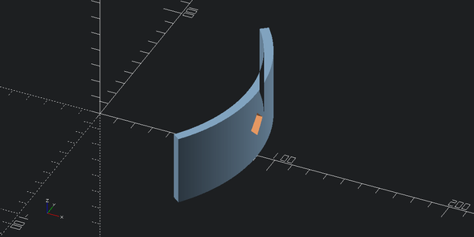
hole_inset_angle = 10
outer_part - hole_cutter.rotate([0,0,-(outer_angle/2-hole_inset_angle)])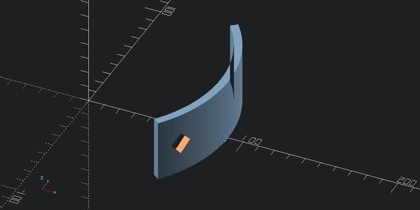
outer_with_holes = (outer_part
-hole_cutter.rotate([0,0,-(outer_angle/2-hole_inset_angle)])
-hole_cutter.rotate([0,0,(outer_angle/2-hole_inset_angle)]))
view(outer_with_holes, eye=(outer_radius*2,0,outer_height), viewall=False)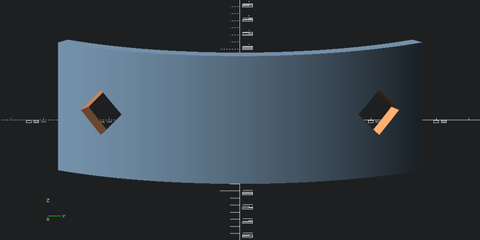
These holes look cool, so let’s make a repeating pattern.
For 3d printing, using more holes would also speed up the printing time and reduce material usage.
Adding repeating pattern
Now we are back to the same problem we had when we needed to place teeth in the gear example.
We have a polygonal section of known radius and of known segment length and we want to relate that to angles.
Aside: turns out this problem has a nice application to wave diffraction.
n = 4+1
r = 2
rs = r*np.ones(n)
theta = np.linspace(-np.deg2rad(45),np.deg2rad(45),n)
fig, ax = plt.subplots(subplot_kw={'projection': 'polar'}, figsize=(5,5))
ax.plot(theta, rs)
ax.set_rmax(r*1.2)
#ax.set_rticks([0.5, 1, 1.5, 2]) # Less radial ticks
#ax.set_rlabel_position(-22.5) # Move radial labels away from plotted line
ax.grid(True)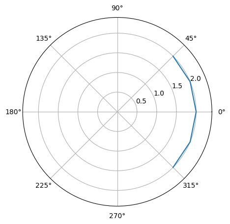
Here we have a circle of radius 2 and a polyhedral segment where distance from origin to every vertex is equal to 2 and angle between each pair of consequent vertices is equal to 90/4 = 22.5 degrees.
In our other problem, on the other hand, we know segment length (it’s diagonal of the cube plus any margin we need), and we know the radius (it’s outer_radius), and we want to know how much angular spacing is between each consequent pair of vertices.
We have an equilateral triangle of known side and base and we want to find the height. If we split base into two, we would end up with the right triangle.
Hence, the sine of the half angle is equal to the half base divided by the side.
Thus:
segment_angle
segment_angle (base, side, deg=True)
test_eq(segment_angle(0,10), 0)\[\text{hole\_diam}^2 + \text{hole\_diam}^2 = \text{hole\_size}^2\]
hole_diam = hole_size/np.sqrt(2)
hole_diamnp.float64(7.071067811865475)margin = 10hole_side = hole_diam + marginsa = segment_angle(hole_side, outer_radius)
sanp.float64(10.884137282582449)Well, let’s test it out
outer_with_holes = (outer_part
-hole_cutter.rotate([0,0,-(outer_angle/2-hole_inset_angle)])
-hole_cutter.rotate([0,0,-(outer_angle/2-hole_inset_angle-sa)])
-hole_cutter.rotate([0,0,(outer_angle/2-hole_inset_angle)]))
view(outer_with_holes, eye=(outer_radius*2,0,outer_height), viewall=False)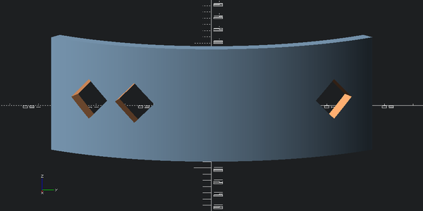
Looks good.
Now, how many holes can we fit in total?
outer_angle / sanp.float64(7.018872575813733)outer_with_holes = outer_part
for i in range(7):
outer_with_holes -= hole_cutter.rotate([0,0,-(outer_angle/2-i*sa - sa/2)])
view(outer_with_holes, eye=(outer_radius*2,0,outer_height), viewall=False)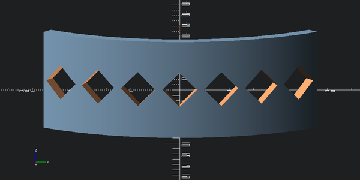
Looks nice! Let’s add more rows.
outer_with_holes = outer_part
for i in range(7):
outer_with_holes -= hole_cutter.rotate([0,0,-(outer_angle/2-i*sa - sa/2)])
for i in range(6):
outer_with_holes -= hole_cutter.rotate([0,0,-(outer_angle/2-i*sa - sa)]).translate([0,0,hole_side/2])
for i in range(6):
outer_with_holes -= hole_cutter.rotate([0,0,-(outer_angle/2-i*sa - sa)]).translate([0,0,-hole_side/2])
outer_with_holes_v1 = outer_with_holes
view(outer_with_holes, eye=(outer_radius*2,0,outer_height), viewall=False)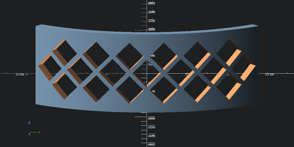
outer_with_holes = outer_part
for i in range(7):
outer_with_holes -= hole_cutter.rotate([0,0,-(outer_angle/2-i*sa - sa/2)])
for i in range(9):
outer_with_holes -= hole_cutter.rotate([0,0,-(outer_angle/2-i*sa + sa)]).translate([0,0,hole_side/2])
for i in range(9):
outer_with_holes -= hole_cutter.rotate([0,0,-(outer_angle/2-i*sa + sa)]).translate([0,0,-hole_side/2])
for i in range(7):
outer_with_holes -= hole_cutter.rotate([0,0,-(outer_angle/2-i*sa - sa/2)]).translate([0,0,hole_side])
for i in range(7):
outer_with_holes -= hole_cutter.rotate([0,0,-(outer_angle/2-i*sa - sa/2)]).translate([0,0,-hole_side])
view(outer_with_holes, eye=(outer_radius*2,0,outer_height), viewall=False)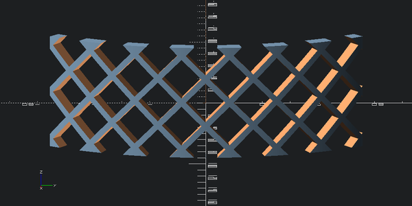
I think I like the one with only three rows more:
outer_with_holes = outer_with_holes_v1
view(outer_with_holes, eye=(outer_radius*2,0,outer_height), viewall=False)view(outer_with_holes, eye=(-outer_radius,0,2*outer_height),center=(outer_radius,0,0), viewall=False)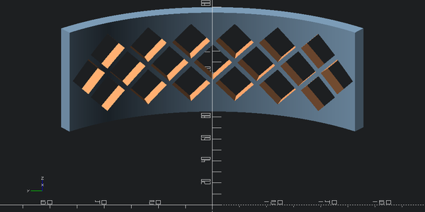
Ok, let’s 3d print this to check out how it look in real life.
stl = export_to_stl(outer_with_holes)stl.save('barrette.stl')